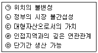
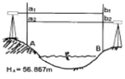
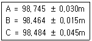
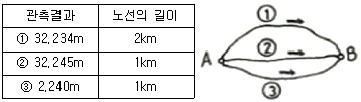
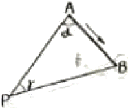
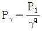

도시계획기사 (2006-03-05 기출문제)
1과목: 도시계획론
1. 도시화(Leo klassen)의 과정은 도시화(집중도시화)→교외화(분석적도시화)→역도시화(도시쇠퇴)의 단계를 거친다. 다음의 도시개발정책 중에서 소도시에서 중규모의 도시로 성장하는 집중적 도시화단계에 우선적으로 필요한 도시정책은?
- 재개발계획
- 광역교통계획
- 도시기본계획
- 지하공간이용계획
(정답률: 알수없음)

2. 다음 중 페티(William Petty)의 법칙을 알기 쉽게 설명한 것은?
- 도시의 규모가 커지면 집적이익은 더 커진다.
- 농업보다 제조업, 제조업보다 상업의 이윤이 더 많다.
- 도시의 인구집중은 거리에 반비례하고, 기회에 비례한다.
- 도시가 발달할수록 비공식부분의 비중이 더 커진다.
(정답률: 알수없음)
3. 도시개발이 토지소유자의 자의로 이루어져 개발행위들이 소규모로 산발적이고, 도시기반시설 설치 비용을 과중하게 하는 것은?
- 재개발
- 난개발
- 공영개발
- 신개발
(정답률: 알수없음)
4. 도시계획시설 중 지구단위계획으로 정할 수 없는 시설은?
- 공원
- 대학교
- 공동구
- 종합의료시설
(정답률: 알수없음)
5. 다음의 재개발 방식 중 그 성격이 전혀 다른 하나는?
- 철거 재개발
- 순환 재개발
- 수복 재개발
- 보존 재개발
(정답률: 알수없음)
6. 가도시화 현상(pseudo-urbanization)과 관련된 설명 중 옳지 못한 것은?
- 도시화 과정에서 농촌지역의 인구 압출요인(壓出要因)보다 도시지역의 흡인(吸引要因)이 클 때 나타나는 현상이다.
- 도시지역의 산업화 속도보다 빠른 인구유입의 결과로 발생하게 된다.
- 노점상등 도시 비공식부문에 종사하는 인구가 증가하는 특성을 보인다.
- 주로 제3세계의 개발도상국가들의 도시화 과정에서 흔히 나타나는 현상이다.
(정답률: 알수없음)
7. 도심공동회의 결과가 아닌 것은?
- 재정문제 직면
- 주택의 슬럼화
- 주간인구의 격감
- 여가시설의 이전
(정답률: 알수없음)
8. 계획이론 중 종합적 합리주의 이론에 대한 비판으로서 부적절한 내용은?
- 인간의 합리성의 한계나 동원할 수 있는 자원의 제약을 감안하지 못하고 있다.
- 죄수의 번민이론이나 불가능성의 공리에 따른 논리적모순을 극복하지 못하고 있다.
- 긍정적 혹은 부정적인 외부효과를 고려하지 못하고 있다.
- 점진주의적 또는 옹호이론적인 입장과 구별되지 않는 한계를 보이고 있다.
(정답률: 알수없음)
9. 도시 또는 지역의 성장을 예측하기 위하여 시간변화에 대한 정량적 변화 예측이나 구성 비율의 변화 관계를 분석하는 방법으로 도시 내부에 일어나는 경제활동의 변화를 국가적 공간 규모와 구역이나 지방 도시지역 등과 서로 비교하는 계량적 방법을 무엇이라고 하는가?
- 경제기반분석(economic base analysis)
- 투입산출분석(input-output analysis)
- 변이할당분석(shift-share analysis)
- 소득지출분석(income-expenditure analysis)
(정답률: 알수없음)
10. Howard에 의해 주창된 대도시 또는 자립도시의 계획방법으로서의 전원도시론과 거리가 먼 것은?
- 도시내의 모든 토지는 사유화 한다.
- 19세기적 공업도시에 대한 비판과 개혁론으로부터 출발한다.
- 도시 주변에 넓은 농업지대를 조성한다.
- 시민경제를 유지하기 위한 공업시설을 유치한다.
(정답률: 알수없음)
11. 무작위로 추출된 집단의 통행 기점과 종점, 목적, 통행수단, 도착시간 등을 조사하는 교통계획 기법은?
- 기종점조사(OD조사)
- 교통량 평가
- 중력모델
- 로짓모델
(정답률: 알수없음)
12. 어느 도시의 최근 10년간의 인구가 등차급수적으로 600,000명에서 900,000명으로 증가하였다고가정할 때, 이 기간 동안의 연평균증가율은?
- 2.5%
- 5.0%
- 6.5%
- 7.5%
(정답률: 알수없음)
13. 선진국에서 관찰되는 도심재활성화(gentrification)에 관한 설명 중 적절치 않는 것은?
- 독신, 신혼부부, 노인 등이 주도한다.
- 도심기능이 전보다 더욱 활성화되는 대세를 입증한다.
- 주로 도심재개발을 통한 주택증가에 연유한다.
- 도심공동화 - 교외화 단계 이후 목격된다.
(정답률: 알수없음)
14. 이용에 있어 배제가 불가능하고 비경합적인 성격을 가지는 공공시설을 무엇이라 하는가?
- 기본시설
- 쾌적시설
- 순수공공재
- 혐오시설
(정답률: 알수없음)
15. 도시지역에 있어서 오픈 스페이스(open space)가 수행하는 역할로 볼 수 없는 것은?
- 레크레이션 기능
- 도로용지의 확보
- 도시경관의 조성
- 문화재 등의 보호
(정답률: 알수없음)
16. 도시관리방식 중 점증적 가치 지향형에 대한 설명으로 옳은 것은?
- 주어진 상황에 따라 가용재원 범위내에서 대응해 가는 방식
- 바람직한 미래창조를 목표로 설정하고 미래예측과 제반 정책수단을 강구하는 방식
- 변동에 적극적으로 대응할 수 있고 시민들의 가치가 적극적으로 반영될 수 있는 관리체계
- 이해 관계자들의 교섭, 협상, 조정 등을 통해 얻어지는 정치적인 합의에 따라 대응하는 방식으로 제한된 대안의 선택을 취함
(정답률: 알수없음)
17. 부도심을 파악하는 기준으로 적절치 않는 것은?
- 직업밀도
- 지대(지가)
- 주거지 밀도
- 통행발생량
(정답률: 알수없음)
18. 샤핀(Chapin)과 카이저(Kaiser)의 도시 토지이용계획 과정 중 기능지역간의 입지배분에서 제일 먼저 검토 배분되어야 할 지역은?
- 주거지역
- 상업지역
- 공업지역
- 녹지지역
(정답률: 알수없음)
19. 우리나라 용도지역의 지정은 도시지역, 관리지역, 농림지역, 자연환경보전지역으로 구분 하는데 다음 중 도시지역 내의 세부구분으로 옳은 것은?
- 주거지역, 상업지역, 공업지역, 녹지지역
- 취락지역, 방재지역, 공업지역, 풍치지역
- 시설보호지역, 상업지역, 공업지역, 경관지역
- 주거지역, 상업지역, 공업지역, 보존지역
(정답률: 알수없음)
20. 다음 중 수상형(手相形) 도시로서 수상형계획(finger plan)과 가장 관련이 없는 도시는?
- 덴마크의 코펜하겐(Copenhagen)
- 스웨덴의 스톡홀롬(Stokholm)
- 핀란드의 헬싱키(Holsingki)
- 벨기에의 루뱅(Louvain)
(정답률: 알수없음)
2과목: 도시설계 및 단지계획
21. 우리나라의 주거단지의 문제점을 개선방안에 관한 설명 중 부적당한 것은?
- 아파트 지구지정과 건축허가기준의 강화
- 새로운 주거 유형과 건물배치 기법 연구
- 단지의 개방성 확보와 편익시설의 확보
- 대형가구(Super Block) 및 고층위주의 개발
(정답률: 알수없음)
22. 약 30%정도의 경사도를 갖는 경사지에 적합한 주택유형은?
- 연립주택(row house)
- 타운 하우스(town house)
- 테라스형 주택(terrace house)
- 중정형 주택(patio house)
(정답률: 알수없음)
23. 다음 중 공동구의 설치로 인한 이점이 아닌 것은?
- 도시미관의 향상
- 유지관리비의 절감
- 설치비용의 절감
- 설비갱신의 용이
(정답률: 알수없음)
24. 다음 중 법적 소유권이 명시되고, 지번이 매겨지는 단위는?
- 확지
- 부지
- 대지
- 필지
(정답률: 알수없음)
25. 구획정리 사업전의 I 대지의 면적이 500m2이고, 잠정환지의 연도가산면적이 200m2이며, 공공용지의 공통감보율이 0.4이고, 잠정환지의 연도부담율이 0.2 일 때, I 획지의 잠정환지면적은?
- 336m2
- 340m2
- 348m2
- 352m2
(정답률: 알수없음)
26. 래드번 계획의 특징으로 적절하지 않은 것은?
- 대가구(superblock)
- 자동차 도로의 기능을 통합 일원화 하였다.
- 보차분리의 원칙이 강조 되었다.
- 기능에 따른 4가지 종류의 도로로 구분하였다.
(정답률: 알수없음)
27. 다음 중 상업 및 근린생활 시설용지의 획지의 형태에서 세장비(細長比)가 1.0 이상이 되어도 좋은 시설로 가장 적당한 것은?
- 호텔
- 우체국
- 동사무소
- 파출소
(정답률: 알수없음)
28. 일반적인 간선 도로망의 구성 형식과 특징이 잘못 설명된 것은?
- 격자형 - 질서 정연한 모습으로 계획적으로 개발된 도시에서 많이 볼 수 있다.
- 환상 방사형 - 시가지가 자연 발생적으로 확대되는 도시에서 많이 나타나는 형식으로서 도시의 중심적 통일성을 강조한다.
- 격자 방사형 - 도시에 통일성을 강조하기 위하여 격자형에 사선도로를 삽입한 도로망 형태로서 교차점이 많고 가구의 모양이 일정하다.
- 혼합형 - 지형과 토지 이용상의 제약으로 격자형, 방사형 등의 혼합된 형태이다.
(정답률: 알수없음)
29. 다음 중 주차장의 주차구획에 관한 설명 중 옳지 않은 것은? (단, 주차장법을 이용한다.)
- 주차장의 주차단위구획은 주차대수 1대에 대하여 너비 2.3미터 이상, 길이 5미터 이상으로 한다.
- 경형자동차전용주차구획의 주차단위구획은 너비 2미터 이상, 길이 3.5미터 이상으로 한다.
- 지체장애인의 전용주차장의 주차단위구획은 주차대수 1대에 대하여 너비 3.3미터 이상, 길이 5미터 이상으로 한다.
- 주차단위구획에서 경형자동차전용주차구획은 백색실선으로 표시하여야 한다.
(정답률: 알수없음)
30. 단지계획시 차량의 진출입구 배치로 적합하지 않은 것은?
- 자동차의 출입구는 되도록 간선도로를 피하여 이면도로를 이용한다.
- 자동차의 출입구는 보행자 도로의 단절을 줄일 수 있도록 배치한다.
- 자동차의 출입구는 도로 모퉁이에 배치하는 것을 피한다.
- 자동차의 출입구는 시각적으로 잘 보이는 교차로 가까이에 배치한다.
(정답률: 알수없음)
31. 다음 시설들 중 건축법상의 용도별 건축물의 분류에 따른 1종 근린생활에 해당되지 않는 것은?
- 마을공화당
- 동사무소(통일한 건물안에서 당해 용도에 쓰이는 바닥 면적의 합계가 1,000m2 미만)
- 체육도장(동일한 건물안에서 당해 용도에 쓰이는 바닥면적의 합계가 500m2 미만)
- 교회
(정답률: 알수없음)
32. 주택이 갖는 속성과 관련 있는 것만으로 구성된 것은?

- ㉠, ㉡, ㉢
- ㉢, ㉣, ㉤
- ㉡, ㉢, ㉣
- ㉠, ㉢, ㉣
(정답률: 알수없음)
33. 산업단지를 조성 할 경우 환경영향평가의 대상 규모는?
- 20만 제곱미터
- 10만 제곱미터
- 7만 제곱미터
- 5만 제곱미터
(정답률: 알수없음)
34. 복합용도구조란 하나의 건물에 2가지 이상의 서로 다른 용도가 존재하는 것을 의미한다. 다음 용도 결합 중 어떤 것이 가장 보편적인 복합 용도 개발인가?
- 주거+업무+상업
- 공업+업무+창고
- 공업+주거+상업
- 아파트+주차장+업무
(정답률: 알수없음)
35. 다음 중 밀도계획과 관계가 가장 먼 것은?
- 단지의 규모
- 편익시설 배분
- 프라이버시
- 건물과 옥외 공간
(정답률: 알수없음)
36. 인간의 친숙한 경험적 스케일로써 감정을 교류할 수 있는 거리 기준은?
- 1~3m
- 10~15m
- 20~30m
- 40~50m
(정답률: 알수없음)
37. 다음 중 하수로시설 계획우수량 산출시 학교ㆍ근린공원의 유출계수는 어느 정도인가?
- 0.30~0.45
- 0.50~0.65
- 0.70~0.85
- 0.9~1.0
(정답률: 알수없음)
38. 단지계획의 계획과정을 순서대로 나열한 것은?
- 목표설정-계획구상-현지답사-현황분석-기본계획-기본설계
- 목표설정-계획구상-현지답사-현황분석-기본설계-기본계획
- 목표설정-현지답사-현황분석-계획구상-기본계획-기본설계
- 목표설정-현지답사-현황분석-계획구상-기본설계-기본계획
(정답률: 알수없음)
39. 다음 중 공업용지의 수요예측 방법으로 업종별 생산액 또는 종업원 수를 먼저 예측하고, 생산액당 또는 종업원수당 공장용지 소요기준 면적을 곱하여 총 수요를 예측하는 방법은?
- 원단위법
- 소규모 다단위법
- 표준공장 단위법
- 수요예측법
(정답률: 알수없음)
40. 도시공원 중 주로 보도권안에 거주하는 자의 이용에 제공할 것을 목적으로 하는 보도권 근린공원의 유치거리로 옳은 것은?
- 250m 이하
- 500m 이하
- 1,000m 이하
- 1,500m 이하
(정답률: 알수없음)
3과목: 도시개발론
41. 수준측량에 있어서 측량목적에 따른 분류에 속하지 않는 것은 무엇인가?
- 표면 수준 측량
- 단면 수준 측량
- 고저차 수준 측량
- 직접 수준 측량
(정답률: 알수없음)
42. 국가기본도인 축척 1/5,000의 수치지도에서 산기슭으로부터 정상까지 직선 거리를 재어보니 24cm이며, 산기슭의 표고는 175m, 산 정상의 표고는 480m이었다. 이 사면의 경사는 얼마인가?
- 약 1/3.9
- 약 1/5.8
- 약 1/7.4
- 약 1/9.3
(정답률: 알수없음)
43. 지표면에 존재하는 각각의 주제가 지닌 실제 면적에 비례하여 지도상에 각각의 주제에 관한 면적을 배분하는 투영법은?
- 등적투영법
- 틍거리두영법
- 등각투영법
- 원뿔투영법
(정답률: 알수없음)
44. 지도중첩을 설명한 것으로 가장 올바른 것은?
- 둘 이상의 입력지도나 자료층을 겹치는 것
- 도면을 인접한 다른 도면과 연결시키는 것
- 하나의 자료층에 다른 자료층을 복사하는 것
- 입력지도를 다른 도면으로 대체하는 것
(정답률: 알수없음)
45. 강 주변의 표고를 결정하기 위하여 교로수준측량을 실시하여 다음 결과를 얻었다. A점의 표고가 56.867m 일 때 B점의 표고는? (단. a1=1.465m, a2=0.908m, b1=3.274m, b2=1.047m)

- 55.583m
- 55.593m
- 58.141m
- 58.131m
(정답률: 알수없음)
46. 평지에서 8km 떨어진 두 삼각점 사이를 관측하기 위하여 세워야 되는 측표의 최소높이는? (단, 지구의 반경 = 3.670km)
- 2.1m
- 5.1m
- 7.1m
- 9.1m
(정답률: 알수없음)
47. 다음 중 지형공간정보체계의 도형자료와 거리가 가장 먼 것은?
- 지도자료
- 항공사진자료
- 위성영상자료
- 보고서자료
(정답률: 알수없음)
48. 점A의 표고 125m, 점B의 표고 225m, AB의 수평거리 260m일 때 표고 200m의 등고선은 AB의 연결선상에서 A점으로부터 수평거리 몇 m 떨어진 곳을 지나는가?
- 190m
- 195m
- 200m
- 2⑤m
(정답률: 알수없음)
49. 어느 지점의 각을 B회 측정하여 평균제곱근 오차 ±0.7“을 얻었다. 같은 조건으로 관측하여 ±0.3”의 평균제곱근 오차를 얻기 위하여는 몇 회 측정하는 것이 바람직한가?
- 18회
- 24회
- 32회
- 44회
(정답률: 알수없음)
50. 동일 조건으로 기선측정을 하여 다음과 같은 결과를 얻었다. 최확치는?

- 98.462m
- 98.464m
- 98.46m
- 98.468m
(정답률: 알수없음)
51. 표준줄자와 비교하여 7.5mm가 긴 30m 줄자로 경사면을 잰 결과 150m였다. 경사 보정량이 1cm일 때 양지점의 고저차는?
- 2.01m
- 1.73m
- 1.84m
- 2.65m
(정답률: 알수없음)
52. 다음 오차에 대한 설명 중 틀린 것은?
- 참오차는 관측값과 참값의 차이다.
- 잔차는 최확값과 관측값의 차이다.
- 평균오차는 최확값에 대한 표준편차이다.
- 오차의 일반법칙은 우연오차를 대상으로 한다.
(정답률: 알수없음)
53. 트래버스측량결과에 대한 조정에 있어 위거(또는 경거)오차량에 대한 조정방법 중 컴퍼스법칙에 의한 조정방법으로 맞는 것은?
- 각과 거리의 측정의 정밀도가 다르게 측정되었을 시에 적용하는 방법이다.
- 위거와 경거의 폐합(결합)오차를 각 측선의 거리에 비례하여 그 조정량을 구한다.
- 위거와 경거의 폐합(결합)오차를 각 측선에 이르는 누적된 거리에 따라 그 조정량을 구한다.
- 위거와 경거의 폐합(결합)오차를 각 측선에 이르는 위거(또는 경거)의 크기에 비례하여 그 조정량을 구한다.
(정답률: 알수없음)
54. 지형을 표현하는 방법과 거리가 먼 것은?
- TIN(triangular lrregular Network)
- DEM(Digital Elevbation Model)
- DTM(Digita Terrain Model)
- WAN(Wide Area Network)
(정답률: 알수없음)
55. 평판측량시 축척 1/600일 때 도면작성시 도상 0.3mm 오차 허용시 중심맞추기 오차의 허용범위는?
- 9cm 이내
- 12cm 이내
- 15cm 이내
- 18cm 이내
(정답률: 알수없음)
56. A, B 2점간의 고저차를 고하고자 그림과 같이 ①, ②, ③ 노선을 직접 수준측량하여 다음과 같은결과를 얻었다. B점의 표고의 최확값은?

- 32.249m
- 32.241m
- 32.243m
- 32.245m
(정답률: 알수없음)
57. 삼각수준측향의 관측값에서 대기의 굴절오차(기차)와 지구의 곡률오차(구차)의 조정방법 중 옳은 것은?
- 기차는 높게, 구차는 낮게 조정한다.
- 기차는 낮게, 구차는 높게 조정한다.
- 기차와 구차를 함께 높게 조정한다.
- 기차와 구차를 함께 낮게 조정한다.
(정답률: 알수없음)
58. 그림에서 B→P의 방위각은? (단, A→B의 방위각은 115° 25‘ 20“, a=66° 17' 12", γ=56° 18' 16")

- 58° 00‘ 48“
- 121° 59‘ 12“
- 148° 09‘ 12“
- 238° 00‘ 48“
(정답률: 알수없음)
59. 다음 중 지도의 표현방법에 따른 분류에서 주제도(Thematic Map)가 아닌 것은?
- 지형도
- 지질도
- 토지이용도
- 토양도
(정답률: 알수없음)
60. 기포관의 감도는 무엇으로 표시하는가?
- 기포관의 길이가 곡률 반경에 끼는 각
- 기포관의 눈금의 양단이 곡률 반경에 끼는 각
- 기포관의 1눈금이 곡률 반경에 끼는 각
- 기포관이 두 눈금이 곡률 반경에 끼는 각
(정답률: 알수없음)
4과목: 국토 및 지역계획
61. 중심지 이론에서 중심지 개념의 기초가 되는 시장권(市場圈)의 크기를 결정하는 요인이 아닌 것은?
- 재화나 용역생산의 규모의 경제의 크기
- 재화나 용역에 대한 수요의 밀도
- 수송비용의 크기
- 시장중심의 수
(정답률: 알수없음)
62. 다음 중 대도시의 성장 억제를 위한 정책과 관계가 가장 적은 것은?
- 과밀부담금제도
- 수도권정비계획
- 광역권개발
- 개발제한구역 설치
(정답률: 알수없음)
63. 동징지역을 구분하는 방법으로 틀린 것은?
- 부드빌의 가중지수법
- 베리의 요인분석법
- 클라손의 표준편차크기법
- 크리스탈러의 중심지체계분석
(정답률: 알수없음)
64. 성장거점이론의 핵심사항 중 하나는 선도 또는 추진산업(Leading or Propulsive Industry)의 입지와 이의 성장을 유도하는 것이다. 다음 중 이들 산업이 갖고 있는 특성이 아닌 것은?
- 지역의 자원 부존과는 큰 관계없으나 대규모 산업
- 어떤 지역에 성장열(Growth mindedness)을 불러올 진보된 수준의 기술을 요구하는 새롭고 동적인 산업
- 국내시장을 상대로 하는 제품 생산과 이 상품에 대한 소득 탄력성이 높은 산업
- 다른 산업부문과 강한 연계를 갖는 산업
(정답률: 알수없음)
65. 다음 산업입지론의 연구에 있어서 3가지 주요접근 방법론이 아닌 것은?
- 최소비용 접근법(the least cost approach)
- 이윤극대화 접근법(the profit maximization approach)
- 최대수입법(the market area approach)
- 상품유통 분석(commodity circulation analysis)
(정답률: 알수없음)
66. 전국의 인구는 5천만명, 전국의 섬유산업 종사자수는 1백만명일 때, 인구 2백만명, 섬유산업종사자수가 5만명인 도시의 섬유산업입지상계수(LQ)는?
- 0.8
- 1.5
- 1.2
- 1.25
(정답률: 알수없음)
67. 지프(Zipf)의 순위규모모형은

로 나타낼 수 있다. 이 때 Pγ은 순위 γ번째 도시인구, P1은 수위도시 인구, γ은 도시의 순위이다. 지프의 순위규모모형에 관한 설명 중 옳은 것은?- q = 1 일 때 중간규모분포를 한다.
- q값은 국가의 크기에 관계 없다.
- q가 1보다 크면 클수록 종주분포가 심화되어 있음을나타낸다.
- q가 0에 가까우면 가까울수록 등규모의 도시가 적게 분포함을 나타낸다.
(정답률: 알수없음)
68. 도농접근법(agropolitan approach)을 주창하고 연구한 학자는?
- 아이사드(W. Isard)
- 미르달(G. Mrydal)
- 페루(F. Perroux)
- 프리드만(J. Friedmann)
(정답률: 알수없음)
69. 장기종합 계획의 개념하에 계획 - 세부계획 - 예산의 연계 운용을 강조하고, 계획입안에서부터 실행까지 계획가의 전문적인 지식을 활용하고자 하는데 노력하는 계획활동을 표현한 약자는?
- PUD
- PPBS
- PERT
- TSM
(정답률: 알수없음)
70. 다음 중 불균형 성장이론을 옹호한 학자는?
- 넉스(Nurkse)
- 루이스(Lewis)
- 허쉬만(Hirschman)
- 로젠스타인 로단(Rosenstein-Rodan)
(정답률: 알수없음)
71. ‘서울’의 인구가 1,000만명이라 할 때 도시순위 법칙(Rank size rule)에 의한 제 3위 도시인 ‘대구’의 인구는 대략 얼마인가?
- 500만인
- 330만인
- 250만인
- 100만인
(정답률: 알수없음)
72. 대도시권 표준통계구역(SMSA)이라 칭하고 대도시와 대도시에 연계된 교외지역, 그리고 인구 5만명 이상의 도시가 최소 하나 이상 있어야 한다는 대도시권 설정 기준은 다음의 어느 국가가 채택하고 있는가?
- 프랑스
- 독일
- 영국
- 미국
(정답률: 알수없음)
73. 국토기본법에서 언급한 지역계획에 해당하지 않은 것은?
- 광역권개발계획
- 특정지역개발계획
- 도종합계획
- 수도권발전계획
(정답률: 알수없음)
74. 입지론(location theory)에서 제시하고 있는 산업입지에 관계하는 중요한 요소가 아닌 것은?
- 교통
- 노동
- 지가
- 시장
(정답률: 알수없음)
75. 다음 중 국토계획의 개념을 가장 바르게 설명한 것은?
- 국토계획은 국토에서 일어나는 여러 가지 경제활동의 공간적 배분문제를 다루는 경제계획이다.
- 국토계획은 특정한 지역을 계획대상으로 하는 계획이다.
- 국토계획은 하위계획과 구체적인 집행계획에 지침을 제시하는 지침 제시적인 계획이다.
- 국토계획은 지방정부가 계획수립의 주체가 되는 계획이다.
(정답률: 알수없음)
76. 성장거점지역에 있는 선도산업(Leading industry)이 갖고 있는 특성이 아닌 것은?
- 진보된 수준의 기술을 요구하는 새롭고 동적인 산업이다.
- 생산품의 수요에 대한 소득탄력성이 높다.
- 전방파급 효과가 크고, 후방파급 효과가 작다.
- 쇄신에 대한 능력이 뛰어난 성장산업이다.
(정답률: 알수없음)
77. 기반부문의 고용인구 100명, 비기반부문의 고용인구가 200명일 경우, 기반비(A)와 기반승수(B)는 얼마인가?
- A = 0.5, B = 2.0
- A = 0.5, B = 3.0
- A = 2.0, B = 2.0
- A = 2.0, B = 3.0
(정답률: 알수없음)
78. 지역계획의 속성을 설명한 것 중 적합하지 못한 것은?
- 지역개발을 성취하기 위한 수단
- 지역단위 공간의 의도적 개발 노력
- 미래 지향적 문제해결 과정
- 전국적 차원의 계획
(정답률: 알수없음)
79. 클라센(Klassen)은 인구이동의 공간적 분포를 도시화의 단계에 따라 4단계로 구분하고 있다. 다음 중 1990년대 우리나라의 수도권의 인구분포양상을 설명하는 것으로 적합한 것은?
- 도시집중단계
- 교외화단계
- 탈도시화단계
- 도시간분산단계
(정답률: 알수없음)
80. 다음 중 제4차 국토종합계획 수정계획의 기본목표가 아닌 것은?
- 상생하는 균형국토
- 경쟁력 있는 개방국토
- 활기 넘치는 웰빙국토
- 지속 가능한 녹색국토
(정답률: 알수없음)
5과목: 도시계획관계법규
81. 도시 및 주거환경정비법상에서 말하는 정비기반시설이 아닌 것은?
- 초등학교
- 공원
- 도로
- 상하수도
(정답률: 알수없음)
82. 건축법에 의한 건축 관련 용어 설명 중 옳지 않은 것은?
- 중축이라 함은 기존건축물이 있는 대지안에서 건축물의 건축면적ㆍ연면적ㆍ층수ㆍ높이를 증가시키는 것을 말한다.
- 신축이라 함은 기존 건축물이 철거 또는 멸실된 대지에 새로이 건축물을 축조하는 것을 말한다.
- 개축이라 함은 기존건축물의 전부 또는 일부(내력벽ㆍ기둥ㆍ보ㆍ지붕틀 중 2이상이 포함되는 경우에 한함)를 철거하고 당해 대지에 종전과 동일한 규모의 범위안에서 건축물을 다시 축조하는 것을 말한다.
- 이전이라 함은 건축물을 그 주요 구조부를 해체하지 아니하고 동일한 대지안에서 다른 위치로 옳기는 것을 말한다.
(정답률: 알수없음)
83. 국토의 계획 및 이용에 관한 법률에서 도심기본계획을 설명한 것 중 옳은 것은?
- 특별시장ㆍ광역시장ㆍ시장 또는 군수는 10년마다 관할구역의 고시기본계획에 대하여 그 타당성 여부를 전반적으로 재검토하여 이를 정비하여야 한다.
- 용도지역, 용도지구 및 도시계획사업의 골격에 관한 구상과 기본방향이 제시되어야 한다.
- 특별시ㆍ광역시ㆍ시 또는 군의 관할구역에 대하여 기본적인 공간구조와 장기발전방향을 제시하는 종합계획이다.
- 도시기본계획의 내용이 광역도시계획의 내용과 다른 때에는 도시기본계획의 내용이 우선한다.
(정답률: 알수없음)
84. 다음 중 환지에 의한 도시개발법에서 규정하는 설명이 옳지 않은 것은?
- 청산금은 청산금 교부시에 결정하여야 한다.
- 관련 규정에 의하여 주택으로 환지하는 경우에 동 주택에 대하여는 주택법의 규정에 의한 주택의 공급에 관한 기준을 적용하지 아니한다.
- 시행자는 토지면적의 규모를 조정할 특별한 필요가 있는 때에는 면적이 작은 토지에 대하여는 과소토지가 되지 아니하도록 면적을 증가하여 환지를 정하거나 환지대상에서 제외할 수 있다.
- 환지를 청하거나 그 대상에서 제외한 경우에 그 과부족분에 대하여는 종전의 토지 및 환지의 위치ㆍ지목ㆍ면적ㆍ토질ㆍ환경 등 기타의 사항을 종합적으로 고려하여 금전으로 이를 청산하여야 한다.
(정답률: 알수없음)
85. 도시공원 및 녹지 등에 관한 법률상에서 녹지의 기능에 의한 세분에 포함되지 않는 것은?
- 조화녹지
- 완충녹지
- 경관녹지
- 연결녹지
(정답률: 알수없음)
86. 국가가 시행하는 택지개발사업에 필요한 토지 등의 수용에 관한 재결기관으로 가장 적당한 것은?
- 도지사
- 지방토지수용위원회
- 건설교통부장관
- 중앙토지수용위원회
(정답률: 알수없음)
87. 주택법상에서 간선시설의 종류별 설치 범위 기준으로 옳지 않은 것은?
- 도로의 경우 주택단지 밖의 기간이 되는 도로로부터 주택단지의 경계석까지로 하되, 그 길이가 150미터를 초과하는 경우로ㅆ 그 초과부분에 한한다.
- 상하수도시설의 경우 주택단지 밖의 기간이 되는 상ㆍ하수도시설로부터 주택단지의 경계선까지의 시설로 하되, 그 길이가 200미터를 초과하는 경우로서 그 초과부분에 한한다.
- 지역난방시설의 경우 주택단지 밖의 기간이 되는 열수송관의 분기점으로부터 주택단지내의 각 기계실 입구차단밸브까지로 한다.
- 통신시설의 경우 관로시설은 주택단지 밖의 기간이 되는 시설로부터 주택단지 경계선까지, 케이블시설은 주택단지 밖의 기간이 되는 시설로부터 주택단지안의 최초 단지까지로 한다.
(정답률: 알수없음)
88. 개발제한구역의 지정 및 관리에 관한 특별조치법에서 개발제한구역을 종합적으로 관리하기 위한 개발제한구역관리계획은 몇 년을 단위로 수립하는가?
- 2년
- 3년
- 5년
- 10년
(정답률: 알수없음)
89. 국토의 계획 및 이용에 관한 법에서 미관지구의 분류 중 옳지 않은 것은?
- 중심지미관지구
- 시가화미관지구
- 역사문화미관지구
- 일반미관지구
(정답률: 알수없음)
90. 다음 중 국토의 계획 및 이용에 관한 법률에서 농림지역 및 자연환경보전지역에서 구역 등을 지정하는 경우에 심의를 거쳐야 하는 것은?
- 자연공원법 규정에 의한 공원보호구역
- 자연환경보전법 규정에 의한 생태ㆍ자연도 1등급 권역
- 야생ㆍ동ㆍ식물보호법 규정에 의한 시ㆍ도 야생 동ㆍ식물 보호구역
- 문화재보호법 규정에 의한 명승 및 천연기념물과 그 보호구역
(정답률: 알수없음)
91. 주차장법에 의한 용어의 정의로서 틀린 것은?
- 노상주차장이란 도로의 노면 또는 교통광장의 일정한 구역에 설치된 주차장으로서 일반의 이용에 제공되는 것을 말한다.
- 노외주차장이란 도로의 노면 및 교통광장외의 장소에 설치된 주차장으로서 일반의 이용에 제공되는 것을 말한다.
- 부설주차장이란 관련규정에 의하여 건축물, 골프연습장 기타 주차수요를 유발하는 시설에 부대하여 설치된 주차장으로서 당해 건축물ㆍ시설의 이용자 또는 일반의 이용에 제공되는 것을 말한다.
- 기계식주차장이란 기계식 주차장치를 설치한 노상주차장과 노외주차장을 말한다.
(정답률: 알수없음)
92. 건축법에서 건축물의 대지가 지역ㆍ지구 또는 구역에 걸치는 경우에 대한 설명 중 옳지 않은 것은?
- 대지가 이 법에 의한 지역ㆍ지구 또는 구역에 걸치는 경우에는 대통령령이 정하는 바에 의하여 그 건축물 및 대지의 전부에 대하여 그 대지의 과반이 속하는 지역ㆍ지구 또는 구역안의 건축물 및 대지 등에 관한 규정을 적용한다.
- 대지가 녹지지역과 그 밖의 지역ㆍ지구 또는 구역에 걸치는 경우에는 각 지역ㆍ지구 또는 구역안의 건축물 및 대지에 관한 규정을 적용한다.
- 건축물이 경관지구에 걸치는 경우에는 그 건축물 및 대지의 전부에 대하여 경관지구안의 건축물 및 대지에 관한 규정을 적용한다.
- 하나의 건축물이 방화지구와 그 밖의 구역에 걸치는 경우에는 그 전부에 대하여 방화지구안의 건축물에 관한 규정을 적용한다.
(정답률: 알수없음)
93. 도시계획시설의 결정ㆍ구조 및 설치기준에 관한 규칙의 설명 중 옳지 않은 것은?
- 광장의 결정기준에 따른 분류에는 교통광장, 일반광장, 경관광장, 지하광장, 건축물부설광장이 있다.
- 주차장이라 함은 주차장법 규정에 의한 노외주차장과 노상주차장을 말한다.
- 유원지의 규모는 1만제곱미터 이상으로 당해 유원지의 성격과 기능에 따라 적정하게 한다.
- 공공공지라 함은 보행자의 통행과 재해대책, 경관유지 등을 위하여 설치하여야 한다.
(정답률: 알수없음)
94. 도시 및 주거환경정비법상에서 정하는 노후ㆍ불량 건축물로 볼 수 없는 것은?
- 건축물이 훼손되거나 일부가 멸실되어 붕괴 그 밖의 안전사고의 우려가 있는 건축물
- 주거환경이 불량한 곳에 소재하여 당해 건축물을 준공일 기준으로 40년까지 사용하기 위하여 보수ㆍ보강하는 데 드는 비용이 철거 후 새로운 건축물을 건설하는데 드는 비용보다 클 것으로 예상되는 건축물
- 건축물의 기능적 결함 등으로 철거가 불가피한 건축물로서 준공된 후 20년이 지난 건축물
- 도시미관, 토지이용도, 난방방식, 구조적 결함 또는 부실시골 등으로 인하여 재건축이 불가피하다고 주변 주민들이 인정하는 주택
(정답률: 알수없음)
95. 다음 중 수도권정비계획법령에 의한 성장관리권역에서 시설의 신설ㆍ증설이 제한되는 것은?
- 수도권 안에서의 학교의 이전
- 총량규제의 내용에 적합한 범위안에서의 학교의 입학정원의 증원
- 판매 및 영업시설의 신축ㆍ증축 또는 용도변경
- 기존 연수시설의 건축물 연면적의 100분의 20의 범위 안에서의 증축
(정답률: 알수없음)
96. 주차장법 규정에 의한 노외주차장인 주차전용건축물과 관련한 최소한도 및 높이제한의 기준으로 옳지 않은 것은?
- 건폐율 : 100분의 90이하
- 용적률 : 1천500퍼센트 이하
- 대지면적의 최소한도 : 60제곱미터이상
- 대지가 너비 12미터인 도로에 접하는 경우 : 건축물의 각 부분의 높이는 그 부분으로부터 대지에 접한 도로의 반대쪽 경계선까지의 3배로 한다.
(정답률: 알수없음)
97. 주차장법상에서 단지조성사업 등에 관하여 환경ㆍ교통ㆍ재해 등에 관한 영향평가법에 의한 교통영향평가를 받지 아니하여도 되는 노외주차장의 규모 기준은?
- 당해 사업부지 면적의 0.3% 이상
- 당해 사업부지 면적의 0.6% 이상
- 당해 사업부지 면적의 1.2% 이상
- 당해 사업부지 면적의 2.0% 이상
(정답률: 알수없음)
98. 택지개발촉진법에서 택지개발사업시행자가 택지를 수의계약으로 공급할 때에는 1세대당 1필지를 기준으로 1필지당 얼마 이상, 얼미 이하로 공급하여야 하는가?
- 85제곱미터이상, 100제곱미터이하
- 100제곱미터이상, 165제곱미터이하
- 165제곱미터이상, 200제곱미터이하
- 165제곱미터이상, 230제곱미터이하
(정답률: 알수없음)
99. 체육시설의 설치ㆍ이용에 관한 법률에서 체육시설업 사업계획 승인과 관련된 설명 중 옳지 않은 것은?
- 관련 규정에 의하여 등록체육시설업에 대한 사업계획의 승인을 얻은 자는 그 사업계획의 승인을 얻은 날부터 6년 이내에 그 사업시설의 설치공사를 착수ㆍ준공하도록 노력하여야 한다.
- 시ㆍ도지사는 규정에 의하여 사업계획의 승인이 취소된 후 6월이 지나지 아니한 때에는 동일한 장소에서 그 사업계획의 승인이 취소된 자에게 그 취소된 체육시설업과 같은 종류의 체육시설업에 대한 사업계획의 승인을 할 수 없다.
- 허위 기타 부정한 방법으로 관련 규정에 의한 사업계획의 승인 또는 변경승인을 얻은 때 취소할 수 있다.
- 회원을 모집하는 체육시설업에 대해서는 사업계획의 승인이 취소된 후 6월이 지나지 아니하였지만 동일한 장소에서 회원제 생활체육시설 사업계획은 승인할 수 있다.
(정답률: 알수없음)
100. 국토의 계획 및 이용에 관한 법률 상 도시관리계획 결정절차에서 지방의회의 의견과 중앙도시계획 위원회의 의결을 생략할 수 있는 경우는?
- 국방상 또는 국가안전보장상 기밀을 요한다고 인정될 때
- 건축물의 높이의 최고한도 또는 최저한도에 관한 사항
- 지가의 변동이 극심하거나 인심의 동요가 발생될 때
- 천재지변 등 긴급사항이 발생할 때
(정답률: 알수없음)